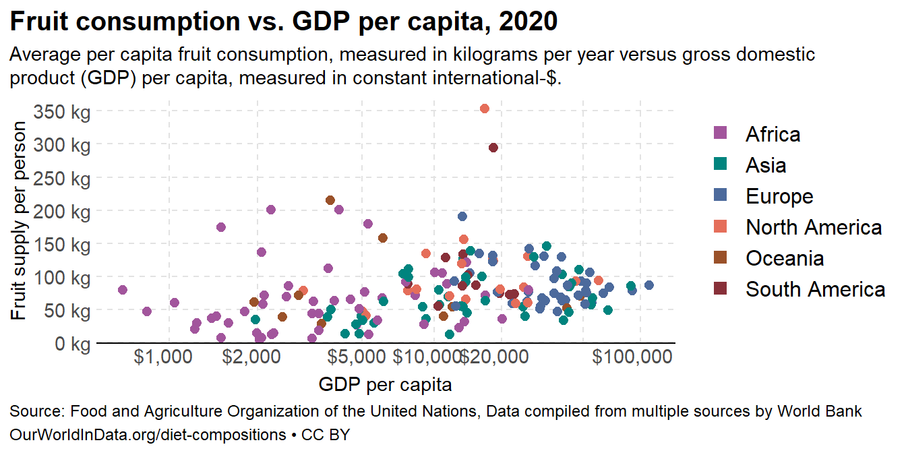
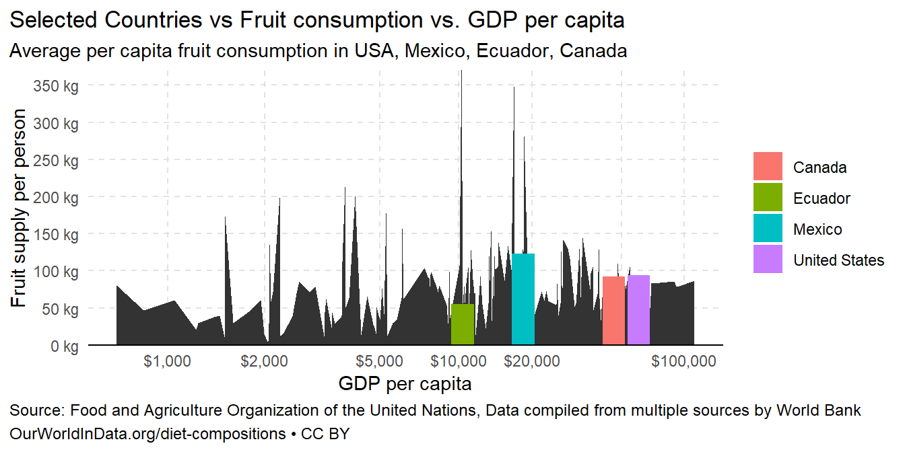
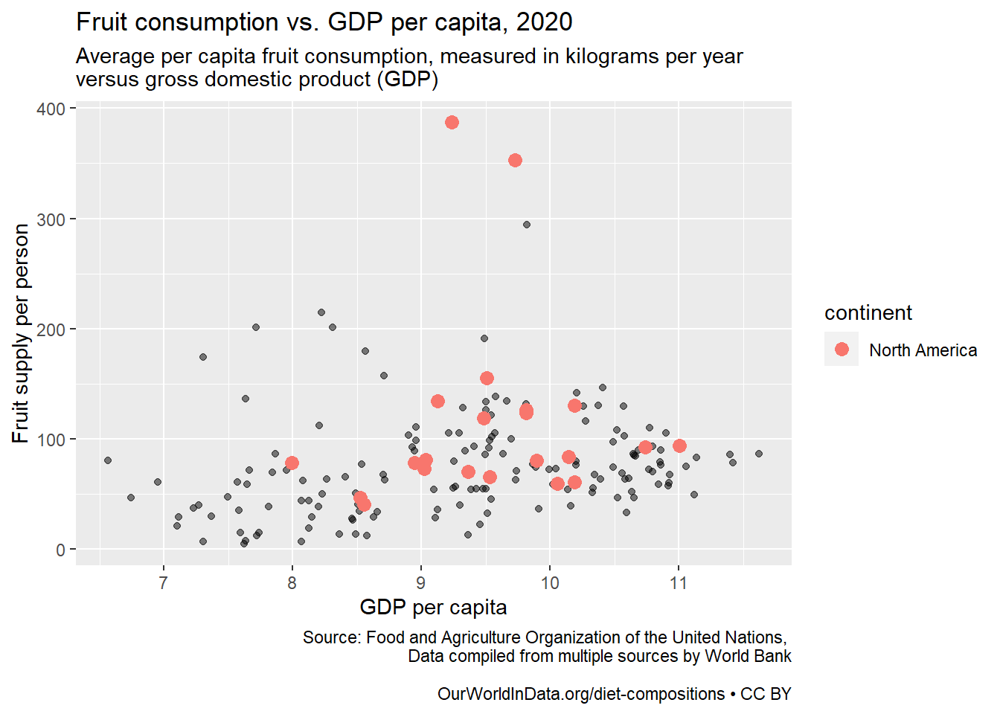

The Our World in Data website publishes research and graphics that provide insight into world data. We are going to recreate one of their charts and use it to practice our annotation skills.
If the thing you want to edit is not a theme element, then it is related to data and can mostly likely be changed inside a geom_() or a scale_() layer.
Load Packages
Step1
Recreate this graph as closely as you can. This will/should take the bulk of your time
Code
df <-read_csv("fruit.csv")head(df,5)
# A tibble: 5 × 6
Entity Code Year Fruit | 00002919 || …¹ GDP per capita, PPP …² Continent
<chr> <chr> <dbl> <dbl> <dbl> <chr>
1 Abkhazia OWID… 2015 NA NA Asia
2 Afghanist… AFG 1961 41.9 NA <NA>
3 Afghanist… AFG 1962 38.7 NA <NA>
4 Afghanist… AFG 1963 39.0 NA <NA>
5 Afghanist… AFG 1964 48.9 NA <NA>
# ℹ abbreviated names:
# ¹`Fruit | 00002919 || Food available for consumption | 0645pc || kilograms per year per capita`,
# ²`GDP per capita, PPP (constant 2017 international $)`
Code
df <-rename(df,fruit_pp =`Fruit | 00002919 || Food available for consumption | 0645pc || kilograms per year per capita`, gdp_per_cap =`GDP per capita, PPP (constant 2017 international $)`,entity = Entity,code = Code,year = Year,continent = Continent)# fill in missing values and do some filteringdata_2020 <- df |>group_by(entity) |>fill(continent, .direction ="downup") |># fills in missing values in the continent column within each entity using the value(s) present in continent.ungroup() |>filter(!is.na(continent)) |># Non countries (continents and other country groups) don't have a continent value. Remove them.filter(year ==2020) # focus on year 2020 to match the visual on the webpage.head(data_2020,5)
# A tibble: 5 × 6
entity code year fruit_pp gdp_per_cap continent
<chr> <chr> <dbl> <dbl> <dbl> <chr>
1 Afghanistan AFG 2020 35.4 1968. Asia
2 Albania ALB 2020 191. 13256. Europe
3 Algeria DZA 2020 105. 10845. Africa
4 Angola AGO 2020 67.5 6032. Africa
5 Antigua and Barbuda ATG 2020 126. 18276. North America
Code
#colnames(data_2020)#str(df)
Graph

##Graph2

graph 3
Code
data3 <- data_2020 %>%filter(continent %in%c('North America'))ggplot(data = data_2020, aes(x=log(gdp_per_cap), y = fruit_pp)) +geom_point(alpha =0.5) +geom_point(data = data3, aes(x =log(gdp_per_cap), y = fruit_pp, color = continent), alpha =1, size =3) +labs(y='Fruit supply per person', x ='GDP per capita', title ='Fruit consumption vs. GDP per capita, 2020', subtitle ='Average per capita fruit consumption, measured in kilograms per year \nversus gross domestic product (GDP)', caption ='Source: Food and Agriculture Organization of the United Nations, Data compiled from multiple sources by World BankOurWorldInData.org/diet-compositions • CC BY')

Summarizing
This is one of the longest projects I have worked. I have learn several commands such as:
Basically, I learned that there is a command to customize any part of the graph. When I do not know how google is a great tool to search for examples. Highlighting is also an important tool. I learned that manipulating the colors, shapes, and sizes is a great way to attract the reader´s eye.
Source Code
---title: "Our World in Data Part 1s"author: "Gabriel Guerrero"date: "`r format(Sys.time(), '%B %d, %Y')`"execute: keep-md: true warning: falseformat: html: code-fold: true code-tools: true---## BackgroundThe Our World in Data website publishes research and graphics that provide insight into world data. We are going to recreate one of their charts and use it to practice our annotation skills.If the thing you want to edit is not a theme element, then it is related to data and can mostly likely be changed inside a geom_() or a scale_() layer.## Load Packages```{r}#| label: load_packages#| echo: false# Use this R-Chunk to load the libraries you will use in this file.library(tidyverse)library(readr)```## Step1Recreate this graph as closely as you can. This will/should take the bulk of your time```{r}#| label: loaddf <-read_csv("fruit.csv")head(df,5)df <-rename(df,fruit_pp =`Fruit | 00002919 || Food available for consumption | 0645pc || kilograms per year per capita`, gdp_per_cap =`GDP per capita, PPP (constant 2017 international $)`,entity = Entity,code = Code,year = Year,continent = Continent)# fill in missing values and do some filteringdata_2020 <- df |>group_by(entity) |>fill(continent, .direction ="downup") |># fills in missing values in the continent column within each entity using the value(s) present in continent.ungroup() |>filter(!is.na(continent)) |># Non countries (continents and other country groups) don't have a continent value. Remove them.filter(year ==2020) # focus on year 2020 to match the visual on the webpage.head(data_2020,5)#colnames(data_2020)#str(df)```## Graph```{r}#| label: graph#| echo: false#| #| fig-width: 10#| fig-height: 3.5graf <-ggplot(data_2020, aes(log(gdp_per_cap),fruit_pp))+geom_point(aes(colour= continent, size=entity), size=2.1)+theme_bw()+theme(panel.grid =element_line(color ="#e2e2e2",size =0.5,linetype ="dashed"),panel.grid.minor =element_blank(),legend.title =element_blank() )+coord_cartesian(ylim =c(0, 370))+scale_x_continuous(breaks =log(c(1000, 2000, 5000, 10000, 20000, 50000, 100000)),labels =c("$1,000", "$2,000", "$5,000", "$10,000", "$20,000","", "$100,000"), trans ="log")+scale_y_continuous(breaks =seq(0,350, by=50), labels =c("0 kg","50 kg", "100 kg", "150 kg", "200 kg","250 kg","300 kg", "350 kg"),expand=expansion(add =c(0.4,0)))+scale_color_manual(values =c("#a2559c","#00847e", "#4c6a9c", "#e56e5a","#9a5129","#883039"))+guides(color =guide_legend( override.aes=list(shape =15, size=3)))graf+labs(title="Fruit consumption vs. GDP per capita, 2020",subtitle ="Average per capita fruit consumption, measured in kilograms per year versus gross domesticproduct (GDP) per capita, measured in constant international-$.",caption ="Source: Food and Agriculture Organization of the United Nations, Data compiled from multiple sources by World BankOurWorldInData.org/diet-compositions • CC BY")+ylab("Fruit supply per person")+xlab("GDP per capita")+theme(plot.caption =element_text(color="black", hjust=0, size=9, lineheight =1.2),plot.caption.position ="plot",plot.title.position ="plot",plot.title =element_text(face="bold", color="black", hjust=0, size=15, lineheight =1.2),legend.text =element_text(size=12),legend.justification ="top",plot.subtitle =element_text(color="black", hjust=0, size=11, lineheight =1),axis.text =element_text(size=11, lineheight =2),axis.text.x =element_text(margin =margin(t =0, r =20, b =2, l =0),hjust = .6,lineheight =1),axis.text.y =element_text(margin =margin(r =0)),panel.border =element_blank(), axis.line =element_line(colour ="black"),axis.line.y =element_blank(),axis.ticks =element_blank() )```##Graph2```{r}#| label: graph_2#| echo: false#| #| fig-width: 10#| fig-height: 3.5garf1 <-filter(data_2020, entity=="Canada"| entity=="Mexico"| entity=="United States"| entity=="Ecuador")graf1 <-ggplot(garf1, aes(log(gdp_per_cap),fruit_pp))+geom_area(data=data_2020,aes(log(gdp_per_cap),fruit_pp))+geom_col(aes(fill= entity))+theme_bw()+theme(panel.grid =element_line(color ="#e2e2e2",size =0.5,linetype ="dashed"),panel.grid.minor =element_blank(),legend.title =element_blank() )+coord_cartesian(ylim =c(0, 370))+scale_x_continuous(breaks =log(c(1000, 2000, 5000, 10000, 20000, 50000, 100000)),labels =c("$1,000", "$2,000", "$5,000", "$10,000", "$20,000","", "$100,000"), trans ="log")+scale_y_continuous(breaks =seq(0,350, by=50), labels =c("0 kg","50 kg", "100 kg", "150 kg", "200 kg","250 kg","300 kg", "350 kg"),expand=expansion(add =c(0.4,0)))+scale_color_manual(values =c("#a2559c","#00847e", "#4c6a9c", "#e56e5a","#9a5129","#883039"))+guides(color =guide_legend( override.aes=list(shape =15, size=3)))graf1+labs(title="Selected Countries vs Fruit consumption vs. GDP per capita",subtitle ="Average per capita fruit consumption in USA, Mexico, Ecuador, Canada",caption ="Source: Food and Agriculture Organization of the United Nations, Data compiled from multiple sources by World BankOurWorldInData.org/diet-compositions • CC BY")+ylab("Fruit supply per person")+xlab("GDP per capita")+theme(plot.caption =element_text(color="black", hjust=0, size=9, lineheight =1.2),plot.caption.position ="plot",plot.title.position ="plot",legend.justification ="center",plot.subtitle =element_text(color="black", hjust=0, size=11, lineheight =1),panel.border =element_blank(), axis.line =element_line(colour ="black"),axis.line.y =element_blank(),axis.ticks =element_blank() )```### graph 3```{r}data3 <- data_2020 %>%filter(continent %in%c('North America'))ggplot(data = data_2020, aes(x=log(gdp_per_cap), y = fruit_pp)) +geom_point(alpha =0.5) +geom_point(data = data3, aes(x =log(gdp_per_cap), y = fruit_pp, color = continent), alpha =1, size =3) +labs(y='Fruit supply per person', x ='GDP per capita', title ='Fruit consumption vs. GDP per capita, 2020', subtitle ='Average per capita fruit consumption, measured in kilograms per year \nversus gross domestic product (GDP)', caption ='Source: Food and Agriculture Organization of the United Nations, Data compiled from multiple sources by World BankOurWorldInData.org/diet-compositions • CC BY') ```## SummarizingThis is one of the longest projects I have worked. I have learn several commands such as: plot.caption = element_text() plot.caption.position = "plot" plot.title.position ="plot" plot.title = element_text(2), legend.text = element_text(), legend.justification = "top", plot.subtitle = element_text(), axis.text = element_text(), axis.text.x = element_text(), axis.text.y = element_text(), panel.border = element_blank(), axis.line.y = element_blank(), axis.ticks =element_blank()Basically, I learned that there is a command to customize any part of the graph. When I do not know how google is a great tool to search for examples. Highlighting is also an important tool. I learned that manipulating the colors, shapes, and sizes is a great way to attract the reader´s eye.